1. Which one of the following is 277007.007 in words?
2. What is the value of digit 3 in the number 17.1301?
3. Which of the following numbers can be divided by 84, 120 and 180 without a remainder?
4. How many times is the value of digit 9 more than the value of digit 6 in the number 297613?
5. Round off 8.4753 to 3 decimal places.
6. By selling a trouser for sh. 360, Ojwaya got a loss of 20%. What was the buying price of the trouser?
7. What is the next number in the sequence? 1,4,13,40, _______
8. Work out
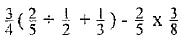
9. In the figure below. EB is parallel to DC and AC = BC while the size of angle DCA = 56°.
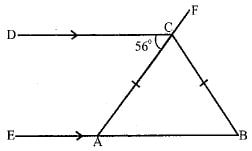
10. A factory produced 800 blankets a day. Production was increased by 20%. How many blankets were now produced each day?
11. Round off 3094682 to the nearest ten thousands
12. An aeroplane took 3 hr 55 min to fly from Cairo to Nairobi. If it reached Nairobi at 0235 h on Wednesday, at what time and day had it left Cairo?
13. Find twice the perimeter of the figure below(π = 22⁄7)
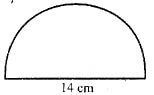
14. Evaluate: 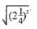
15. A man sold his car for sh. 360000 thus making loss of 10%. How much would he have sold it as to make a profit of 10%?
16. The distance between two towns on a map is 10 cm. If the actual distance is 10 km what is the scale on the map?
17. Solve for x
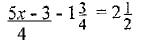
18. The cylinder below is open at the top.
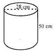
19. Using a ruler and a pair of compass only, construct triangle ABC in which AB = 6cm. AC = 4 cm and BC - 5cm. Measure angle ABC.
20. The base of a right angled triangle is 12 cm and the longest side is 13 cm. Find the area of the triangle.
21. What is the area of the figure below?
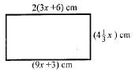
22. The distance from Katana’s home to the market is 1 km 700 metres. If he visits the market twice a day, what distance does he cover in a week?
23. A motorist drives a distance of 187 km in 1 hr 50 minutes. At what speed was he driving?
24. The temperature of a frozen mass of ice was -30°C. The ice was warmed until there was a rise of 70° C. What was the reading on the scale of the thermometer?
25. The marked price of a T.V set is sh. 14800. Belle bought it on hire purchase terms. He paid a deposit of sh. 6800 and 6 monthly instalments of sh. 2300 each. How much more than the marked price did he pay?
26. What is the area of the shaded region in cm2? (π = 22⁄7)
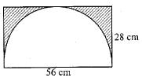
27. Work out
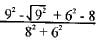
28. What is the volume of the solid drawn below?
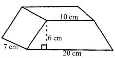
29. The volume of a cylindrical container is 462 cm5. Its height is 12 cm. What is its radius? (π = 22⁄7)
30. Njoroge borrowed sh. 120000 for a period of 9 months. He was charged simple interest at the rate of 12% per annum. How much money did he pay altogether?
31. An empty truck has a mass of 2.5 tonnes. It is loaded with 20 bags of maize each of mass 90 kg. What is the total mass of the loaded truck in tonnes?
32. Ochieng was sent to the shop to buy the following items:
11⁄4kg sugar @ sh. 120
1⁄2 kg cooking fat @ sh. 110
11⁄2kg rice @ sh. 70
1⁄2 kg salt for sh 15
33. Covert 90 km/hr to m/s
34. A table in the shape of a trapezium has an area of 80 cm2. The two parallel lines measure 8 cm and 12 cm respectively. What is the distance between the two parallel sides?
35. In a certain month, a newspaper agent sold a total of 30000 copies at sh. 35 each. If the agent received a 10% commission, how much money did the company receive?
36. A wire of length 1540 cm was cut to make 10 rings. What was the diameter of each ring? (π = 22⁄7)
37. If a = 2, b = 3, c = 5. find the value of
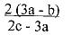
38. Ruth and John shared their proceeds in the business in the ratio of 2:3. If their proceeds amounted to sh. 495000, how much did Ruth get?
39. Peter left Bomet for Sotik, 48 km away. After cycling for 1 hour, he rested for 30 minutes and then continued with his journey for another l1⁄2hr. What was his average speed?
40. 9 men can dig a shamba in 5 days. How long will 15 men take to complete the same job?
41. In the figure below, the circumference of the outer circle is 50.24 cm and the radius of the inner circle is 6 cm.
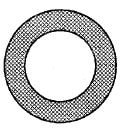
42. In the figure below, AB is parallel to DE. Calculate the size of angle BCD
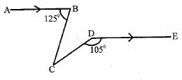
43. Construct triangle ABC in which line AB - 8 cm, angle ABC = 70u and angle CAB = 82“. Draw a perpendicular line from point B to meet line AC at point X. What is the length of line BX?
44. Evaluate
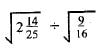
45. Which one of the following statements is true about all quadrilaterals?
46. The pie chart, below shows how Masinde partitioned his 48 ha of land.
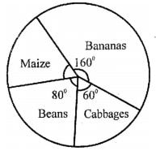
47. Which of the following sets of measurements can form a right-angled triangle?
48. How many times is the LCM of 30, 45 and 60 greater than the GCD of the same numbers?
49. Find the sum of all prime numbers between 10 and 50.
50. December the twelfth of 2011 was a Sunday. What day of the week was twelfth April 2012?